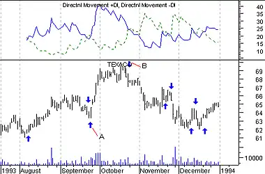

The Directional Movement System helps determine if a security is "trending." It was developed by Welles Wilder and is explained in his book, New Concepts in Technical Trading Systems.
The basic Directional Movement trading system involves comparing the 14-day +DI ("Directional Indicator") and the 14-day -DI. This can be done by plotting the two indicators on top of each other or by subtracting the +DI from the -DI. Wilder suggests buying when the +DI rises above the -DI and selling when the +DI falls below the -DI.
Wilder qualifies these simple trading rules with the "extreme point rule." This rule is designed to prevent whipsaws and reduce the number of trades. The extreme point rule requires that on the day that the +DI and -DI cross, you note the "extreme point." When the +DI rises above the -DI, the extreme price is the high price on the day the lines cross. When the +DI falls below the -DI, the extreme price is the low price on the day the lines cross.
The extreme point is then used as a trigger point at which you should implement the trade. For example, after receiving a buy signal (the +DI rose above the -DI), you should then wait until the security's price rises above the extreme point (the high price on the day that the +DI and -DI lines crossed) before buying. If the price fails to rise above the extreme point, you should continue to hold your short position.
In Wilder's book, he notes that this system works best on securities that have a high Commodity Selection Index. He says, "as a rule of thumb, the system will be profitable on commodities that have a CSI value above 25. When the CSI drops below 20, then do not use a trend-following system."
The following chart shows Texaco and the +DI and -DI indicators. I drew "buy" arrows when the +DI rose above the -DI and "sell" arrows when the +DI fell below the -DI. I only labeled the significant crossings and did not label the many short-term crossings.

The calculations of the Directional Movement system are beyond the scope of this book. Wilder's book, New Concepts In Technical Trading, gives complete step-by-step instructions on the calculation and interpretation of these indicators.